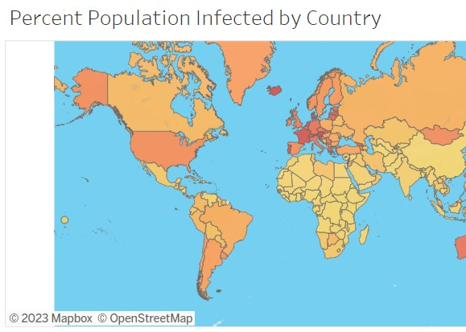

In this project I used Python to explore any trends and correlations on a country level between several ambient air pollutants and deaths due to two chronic diseases known to be affected by air pollution, cardiac disease and chronic respiratory disease. Image from https://familydoctor.org/air-pollution/
In this project I used SQL server to prepare pollution and health (death) data for the trend analysis in Python project. Original data is from https://ourworldindata.org/ Images from
https://www.atmorehealth.org/getpage.php?name=CARDIOPULMONARY
and https://familydoctor.org/air-pollution/

In this project I used SQL server for data exploration of a Covid-19 data set
(original data from https://ourworldindata.org/). Data was then visualized in Tableau Projects. 3D covid-19 virus image from:
https://www.massgeneral.org/news/coronavirus

Visualization of global air pollution data for trend analysis project can be seen in "AirPollutionDashboard". Visualization of global covid-19 data from Data Exploration in SQL can be seen in "Covid Dashboard". Further analysis on the covid-19 data exploration can be seen in "Covid Death Correlation Dashboard."
In this project raw housing data was transformed in SQL server for easier use in data analysis. Nashville housing data from
https://github.com/AlexTheAnalyst/PortfolioProjects/blob/main/
Nashville%20Housing%20Data%20for%20Data%20Cleaning.xlsx